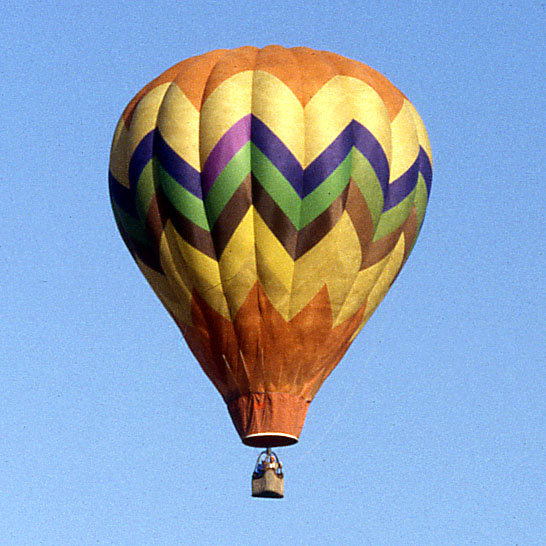

| Полёты на воздушном шаре | ||
|---|---|---|
| Воздушный шар, наполненный горячим воздухом, летает потому, что горячий воздух легче холодного. Первые воздушные шары построили в 1783 г. во Франции братья Монгольфье. |  | Первыми пассажирами воздушного шара стали овца, утка и петух. Их- полет продолжался всего 8 минут. Первый полет человека на воздушном шаре длился 25 минут, а пролетел шар 8 км. |
| Позднее шары стали наполнять не горячим воздухом, а газами легче воздуха, например, водородом. | ||